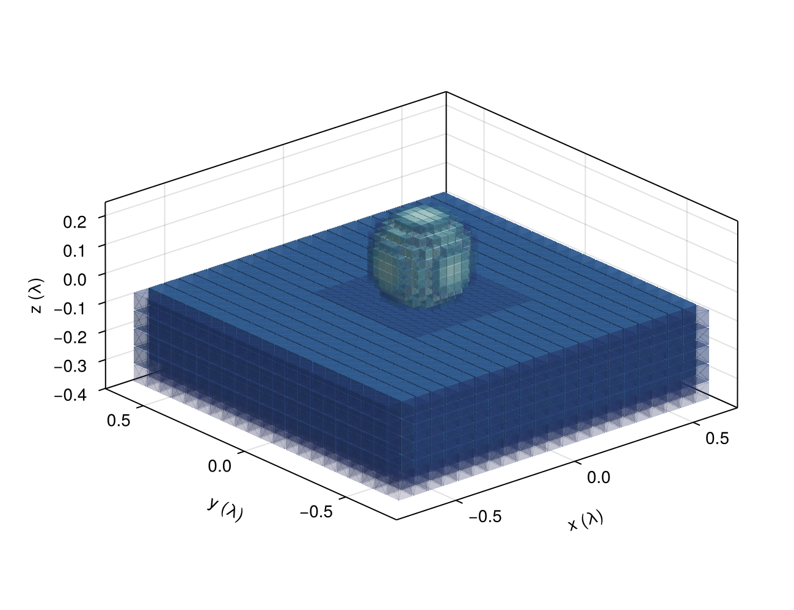
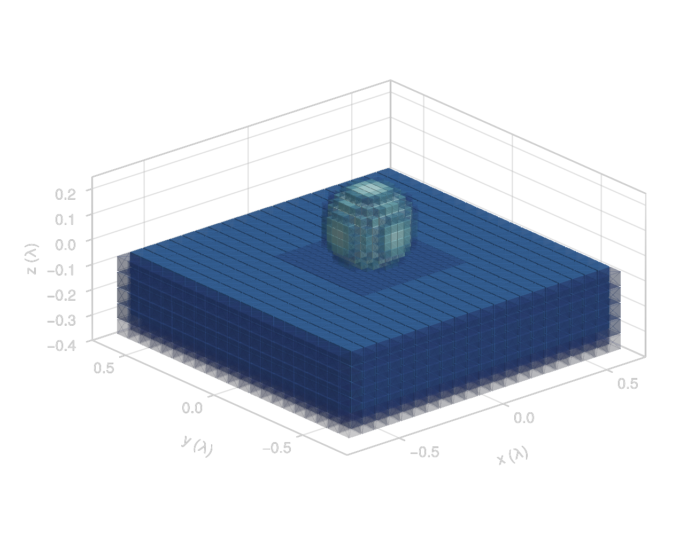
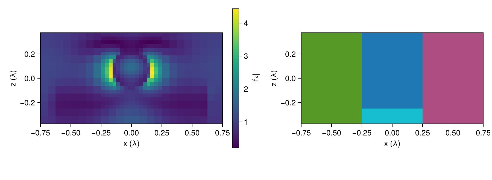
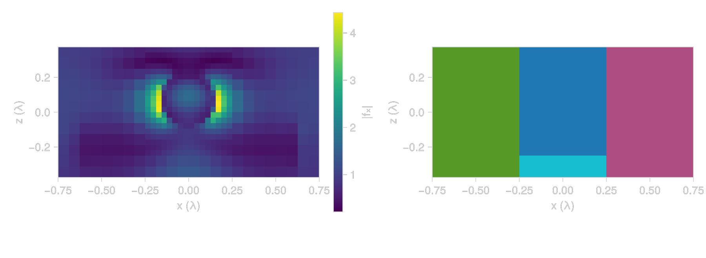

Refined Meshes
A cell has to be small compared with the wavelength in the material, and with the features of the geometry. When only one part of a structure needs fine cells, a uniform mesh still puts fine cells everywhere, which is wasteful. A composite volume gets around this by tiling the box with regions that each have their own cell size, so we can put the fine cells only where we need them.
using GilaElectromagnetics, LinearAlgebra, CairoMakie
using VoxelShapes: VoxelShapes, Region, Geometry, FillableSphere, FillableCuboid,
rasterize, SuperResolutionAntiAliasingComposite Volumes
Our structure is a silicon sphere ($χ = 11$, $n ≈ 3.5$) sitting on a glass pad ($χ = 1.25$). In silicon the wavelength is less than a third of the vacuum one, so we mesh the sphere with cells of $λ/32$, while $λ/16$ is plenty for the glass and the vacuum around it. VoxelShapes.refine splits the coarse region into a core around the sphere at twice the resolution (padded by one coarse cell) and a set of slabs that fill the rest of the box, and CompositeVolume turns the result into a composite volume (both packages export refine, which is why we import from VoxelShapes by name, as in tutorial 4).
χ_silicon = 11.0
χ_glass = 1.25
sphere = FillableSphere((0.0, 0.0, 0.075), 0.15, χ_silicon)
pad = FillableCuboid((0.0, 0.0, -0.2), (1.25, 1.25, 0.25), χ_glass)
geometry = Geometry([sphere, pad], 0.0, SuperResolutionAntiAliasing(4))
coarse_region = Region((24, 24, 12), (1//16, 1//16, 1//16), (0//1, 0//1, 0//1))
pieces = VoxelShapes.refine(coarse_region, sphere; padding = 1//16)
refined_volume = CompositeVolume(pieces);To check the refined mesh, we also solve on the whole box at $λ/32$ and at $λ/16$. A field holds three components per cell, so the number of cells on each mesh is its length divided by 3.
fine_region = Region((48, 48, 24), (1//32, 1//32, 1//32), (0//1, 0//1, 0//1))
volumes = (refined = refined_volume, fine = GlaVol(fine_region), coarse = GlaVol(coarse_region))
map(volume -> length(zeros(volume)) ÷ 3, volumes)(refined = 11392, fine = 55296, coarse = 6912)To see what the refined mesh looks like, we draw every cell of it that holds some material as a slightly shrunk cube, colored by its χ and more see-through the less of it the material fills. The small cubes around the sphere are the fine core, and the large ones are the coarse slabs that cover the rest of the pad. To get how much of each cell is filled, we rasterize the same shapes with $χ = 1$.
filling = Geometry([FillableSphere((0.0, 0.0, 0.075), 0.15, 1.0), FillableCuboid((0.0, 0.0, -0.2), (1.25, 1.25, 0.25), 1.0)],
0.0, SuperResolutionAntiAliasing(4))
centers, sizes, colors = Point3f[], Float64[], RGBAf[]
for piece in VoxelShapes.regions(pieces)
grid, Δ = GlaVol(piece).grd, Float64(GlaVol(piece).scl[1])
χ_piece, filled = rasterize(geometry, piece), rasterize(filling, piece)
for I in findall(>(0), χ_piece)
push!(centers, Point3f(grid[1][I[1]], grid[2][I[2]], grid[3][I[3]]))
push!(sizes, 0.9Δ)
color = cgrad(:ice)[0.3 + 0.6sqrt(χ_piece[I] / χ_silicon)] # square root, so glass isn't near black
push!(colors, RGBAf(color.r, color.g, color.b, 0.1 + 0.9filled[I]))
end
end
fig = Figure(size = (650, 500))
ax = Axis3(fig[1, 1]; aspect = :data, xlabel = "x (λ)", ylabel = "y (λ)", zlabel = "z (λ)",
zlabeloffset = 50, protrusions = (70, 30, 30, 30))
meshscatter!(ax, centers; marker = Rect3f(Vec3f(-0.5), Vec3f(1)), markersize = sizes, color = colors)
fig

Roughly speaking, the cost of applying the operator (and the memory it needs) grows with the number of cells, so the refined mesh is much cheaper than the fine one.
Solving on Each Mesh
We solve the same problem on all three meshes with the same code, since VacuumGreenOperator and the rest of Gila take a composite volume wherever they take a plain one. The operator is built between every pair of regions, and the Geometry is rasterized region by region. discretize! samples the incident field on every cell, and here that is a plane wave coming down from above, polarized along $x$.
Each solve follows the scattering relation of section 1.5. sus(W) is the susceptibility operator $\mathsf{X}$ attached to W, so X * f_inc is the driving current density $\mathsf{p}_\text{d}$, W returns the scattered current density $\mathsf{p}_\text{s}$, and $\mathsf{G}_\circ$ turns that into the scattered field $\mathsf{f}_\text{s}$. The total field is $\mathsf{f}_\text{t} = \mathsf{f}_\text{inc} + \mathsf{f}_\text{s}$.
A field on a composite volume is one flat vector, region after region, so there is no single array to plot. regrid resamples it onto a uniform grid and repeats each coarse cell over the fine cells it covers. We regrid all three solutions at $λ/32$ so that we can compare them cell by cell.
fields = map(volumes) do volume
G₀ = VacuumGreenOperator(volume)
W = ScatteringOperator(G₀, geometry)
X = sus(W)
f_inc = discretize!(zeros(volume), r -> (1, 0, 0) .* cis(-2π * r[3]))
p_d = X * f_inc
p_s = W * p_d
f_s = G₀ * p_s
f_t = f_inc + f_s
regrid(f_t, (1//32, 1//32, 1//32))
end;Plotting the Field
To see the tiling itself, we fill each region of a field with its own index and regrid that too.
tiling = zeros(refined_volume)
for (idx, block) in enumerate(eachregion(tiling))
block .= idx
end
x = Float64.(volumes.fine.grd[1]) # cell centers along x
z = Float64.(volumes.fine.grd[3])
mid_y = 24 # middle y slice, half a cell from the sphere's center
x_comp = 1
fig = Figure(size = (900, 330))
ax = Axis(fig[1, 1]; xlabel = "x (λ)", ylabel = "z (λ)", aspect = DataAspect())
hm = heatmap!(ax, x, z, abs.(fields.refined[:, mid_y, :, x_comp]))
Colorbar(fig[1, 2], hm; label = "|fₓ|")
ax = Axis(fig[1, 3]; xlabel = "x (λ)", ylabel = "z (λ)", aspect = DataAspect())
heatmap!(ax, x, z, real(regrid(tiling)[:, mid_y, :, 1]); colormap = :tab10)
fig

The field is strongest just outside the sphere along the polarization, where the normal field jumps by the ratio of the permittivities. On the right we see the fine core around the sphere, and the coarse slabs that fill the rest of the box.
Accuracy
We take the uniform $λ/32$ solution as the reference and compute the relative difference from it over the cells inside the sphere, for the refined and the coarse mesh.
inside = rasterize(Geometry([sphere], 0.0), fine_region) .> 0
reference = fields.fine[inside, :]
map(f -> norm(f[inside, :] - reference) / norm(reference), (refined = fields.refined, coarse = fields.coarse))(refined = 0.030092983f0, coarse = 0.59991825f0)Inside the sphere, the refined mesh stays within a few percent of the fine one with a fraction of its cells. The coarse mesh is far off, because $λ/16$ is too coarse for the short wavelength in silicon.
This page was generated using Literate.jl.